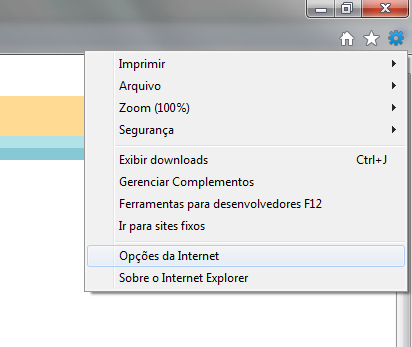
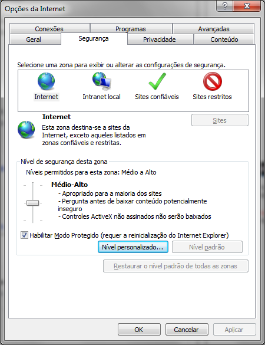
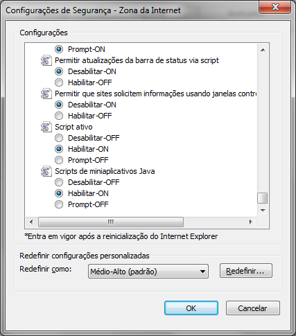
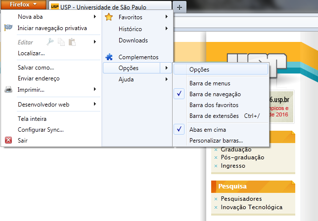
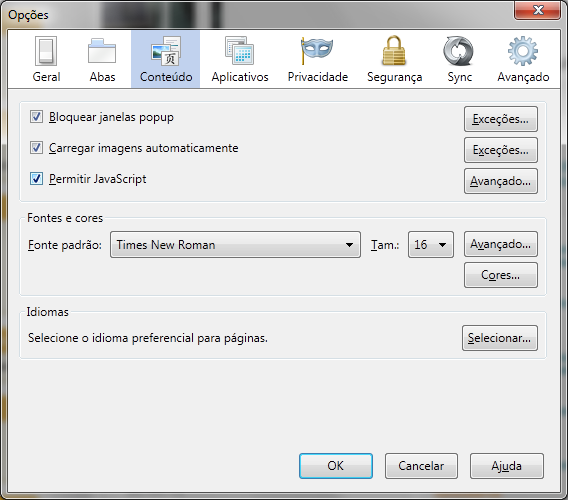
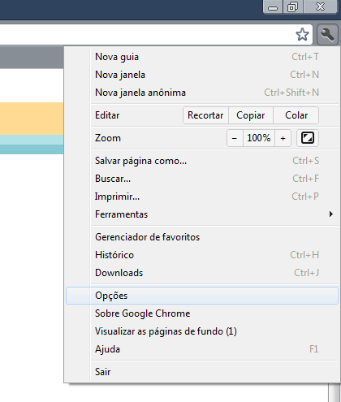
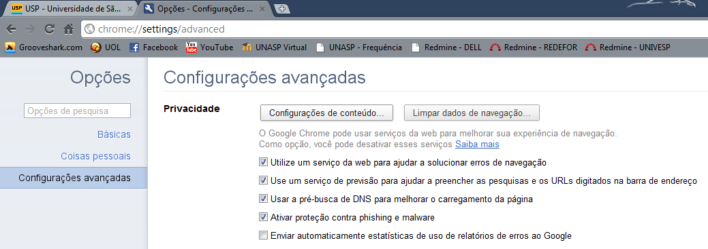
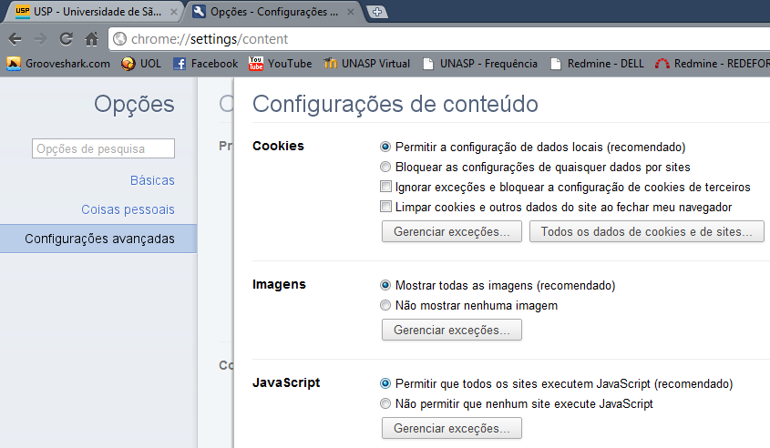

No Internet Explorer:
Clique no ícone indicado na Imagem 1. No menu que se abre, clique em "Opções da Internet". Na janela que se abre, clique na aba "Segurança", indicada na Imagem 2. Nessa seção, clique no botão "Nível personalizado", também indicado na Imagem 2. Na janela que se abre, desça a barra de rolagem até o final e procure pela opção "Script ativo", conforme indicado na Imagem 3, então clique na opção "Habilitar-ON" imediatamente abaixo. Em seguida, clique em "OK" em todas as janelas abertas anteriormente.



No Firefox:
Clique no menu "Firefox" indicado na Imagem 4. No menu que se abre, clique em "Opções" e em seguida novamente em "Opções", também indicado na Imagem 4. Na janela que se abre, clique na aba "Conteúdo", indicada na Imagem 5. Nessa seção, clique na opção "Permitir JavaScript", também indicado na Imagem 5. Em seguida, clique em "OK" em todas as janelas abertas anteriormente.


No Google Chrome:
Clique no ícone indicado na Imagem 6. No menu que se abre, clique em "Opções". Na janela que se abre, clique na aba "Configurações avançadas", indicada na Imagem 7. Nessa seção, clique no botão "Configurações de conteúdo", também indicado na Imagem 7. Na aba que se abre, clique na opção "Permitir que todos os sites executem JavaScript (recomendado)", indicado na Imagem 8.


